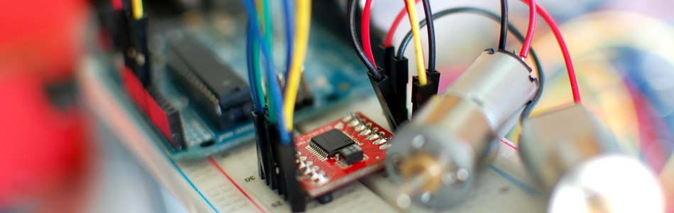

Controlling 2 motors with the TB6612FNG + Arduino

In previous articles we have discussed how to control motors with simple transistors. And... with PWM you could control the speed. But that is just one motor, and you can only go one direction. Today we are going to talk about the TB6612FNG dual motor driver, specifically the TB6612FNG breakout board from sparkfun.
The TB6612FNG isn't just a dual motor driver, it is a dual H-bridge. An h-bridge is basically a specific setup of transistors that allow you to switch direction of current. So hooked up to a motor, that means you can have it spin in both directions, and with PWM input, you can use your arduino to make them spin at any speed. Because the TB6612FNG has 2 H-bridges, you can not only make a robot go forwards and backwards, but also turn around by having each wheel spin in a different direction.
Quick stats on this guy: It is capable of supplying up to 13V and 1.2A (3.2 peak)

Hooking it up
As you can tell from the illustration this guy requires a few pins from your arduino to get it running. And it probably looks complicated at first. But it's not that bad. The first thing to notice however, is that you do need an external power source for your motors (the TB6612FNG can work with 2.5 to 13v), the 5v pin on the arduino just can not source enough power to drive 2 motors, and you could damage your arduino if you do.
But why it uses so many pins is for several reasons. First, there is a standby pin, if this pin is held LOW, the motors are basically disconnected from power. And... Each motor also has 3 control pins, 2 for direction, and one for speed.
Code
The code for this is very basic. We created a function for you that makes controlling the TB6612FNG from your arduino easier, but you can also change it up and do it your own way.
As I mentioned above, Each motor has 3 control pins, 2 for direction, and one for speed. When one direction pin is HIGH and the other is LOW the motor will spin one direction, flip them and it spins the other direction (both HIGH or both LOW and the motor stops). The PWM pin allows you to analogWrite to this pin to control the speed of that one motor. andlogWrite 0 and the motor stops, 255, and it will go full speed.
//motor A connected between A01 and A02 //motor B connected between B01 and B02 int STBY = 10; //standby //Motor A int PWMA = 3; //Speed control int AIN1 = 9; //Direction int AIN2 = 8; //Direction //Motor B int PWMB = 5; //Speed control int BIN1 = 11; //Direction int BIN2 = 12; //Direction void setup(){ pinMode(STBY, OUTPUT); pinMode(PWMA, OUTPUT); pinMode(AIN1, OUTPUT); pinMode(AIN2, OUTPUT); pinMode(PWMB, OUTPUT); pinMode(BIN1, OUTPUT); pinMode(BIN2, OUTPUT); } void loop(){ move(1, 255, 1); //motor 1, full speed, left move(2, 255, 1); //motor 2, full speed, left delay(1000); //go for 1 second stop(); //stop delay(250); //hold for 250ms until move again move(1, 128, 0); //motor 1, half speed, right move(2, 128, 0); //motor 2, half speed, right delay(1000); stop(); delay(250); } void move(int motor, int speed, int direction){ //Move specific motor at speed and direction //motor: 0 for B 1 for A //speed: 0 is off, and 255 is full speed //direction: 0 clockwise, 1 counter-clockwise digitalWrite(STBY, HIGH); //disable standby boolean inPin1 = LOW; boolean inPin2 = HIGH; if(direction == 1){ inPin1 = HIGH; inPin2 = LOW; } if(motor == 1){ digitalWrite(AIN1, inPin1); digitalWrite(AIN2, inPin2); analogWrite(PWMA, speed); }else{ digitalWrite(BIN1, inPin1); digitalWrite(BIN2, inPin2); analogWrite(PWMB, speed); } } void stop(){ //enable standby digitalWrite(STBY, LOW); }
Article taken from bildr.org with minor changes - I am the original author of this content